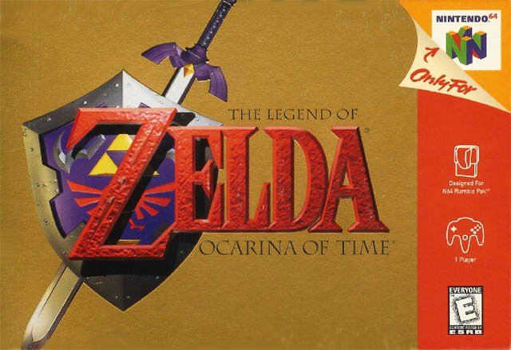

Games Done Quick, also known as GDQ, is a week long, biannual event where groups of people come together to watch some of the best speedrunners in the world. Runners come together to perform live in front of tens of thousands of viewers, which come from both the in-person attendees and those watching online through twitch.
Runners who are selected to participate in a GDQ event will be offered a time slot to run their specific game and respective category. Along with their chosen commentators, runners will give detailed explanations of the tricks and techniques they perform in their run, while also sharing their insight on the game, the community, their highs and lows, and funny stories they've had along the way to be one of the best speedrunners in their community.
These events often feature games from the most popular speedrunning categories. Whether it be a Super Mario, Legend of Zelda, or Super Metroid title, there will always be an entertaining speedrun to watch! Even if you know nothing about the game, you will learn quickly how a speedrunner takes advantage of the glitches in a game to get the fastest time possible.
These events also offer the chance for runners to meet their fellow community members in-person, which otherwise would be a challenging task.
At the most recent event, donations have totaled over 3.4 million dollars during the week-long event, donating all of its profits to the Malala fund. The next GDQ event will begin June 26th, 2022, which will take place in-person at Bloomington, Minnesota and online at the Games Done Quick twitch channel.